소음진동기사(구) (2012-05-20 기출문제)
1과목: 소음진동개론
1. 고유 음향 임피던스를 나타낸 식으로 옳은 것은?
- 음압/입자속도
- 음자속도/음압
- 입압/입자변위
- 음자변위/음압
(정답률: 알수없음)

2. 음의 굴절(refraction of wound wave)에 관한 설명으로 거리가 먼 것은?
- 대기의 온도차에 의한 굴절은 온도가 낮은 쪽으로 굴절한다.
- 음원보다 상공의 풍속이 클 때 풍상측에서는 상공으로 풍하측에서는 지면쪽으로 굴절한다.
- 음의 파장이 크고 장애물의 크기가 작을수록 굴절이 커진다.
- 굴절 전과 후의 음속차가 크면 굴절도 커진다.
(정답률: 알수없음)
3. 다음 정재파(standing wave)에 관한 설명으로 가장 적합한 것은?
- 음원에서 모든 방향으로 동일한 에너지를 방출할 때 발생하는 파
- 둘 또는 그 이상의 음파의 구조적 간섭에 의해 시간적으로 일정하게 음압의 최고와 최저가 반복되는 패턴의 파
- 음파의 진행방향으로 에너지를 전송하는 파
- 음원으로부터 거리가 멀어질수록 더욱 넓은 면적으로 퍼져나가는 파
(정답률: 알수없음)
4. 회전기계에서 발생하는 강제진동의 발생 원인으로 가장 거리가 먼 것은?
- 기어의 치형 오차
- 기초의 여진
- 외부 감쇠력의 증대
- 질량 불평형
(정답률: 알수없음)
5. 항공기 소음에 관한 설명으로 옳지 않은 것은?
- 발생원이 상공이기 때문에 피해면적이 넓은 편이다.
- 항공기의 소음은 간헐적이고 충격적이다.
- PNL 값은 항공기소음 평가의 기본값으로 많이 사용되기도 한다.
- 젯트기의 소음은 금속성의 저주파수 성분이 주가 된다.
(정답률: 알수없음)
6. 청력손실에 관한 설명으로 옳지 않은 것은?
- 영구적 청력손실은 4000Hz정도에서부터 난청이 진행된다.
- 청력손실이 옥타브밴드 중심주파수 500Hz~2000Hz 범위에서 25dB이상이면 난청이라 한다.
- 4분법에 의한 평균청력손실은
 로 나타낸다. (단, a:옥타브밴드 500Hz에서의 청력손실(dB), b:옥타브밴드 1000Hz에서의 청력손실(dB), c:옥타브밴드 2000Hz에서의 청력손실(dB)이다.)
로 나타낸다. (단, a:옥타브밴드 500Hz에서의 청력손실(dB), b:옥타브밴드 1000Hz에서의 청력손실(dB), c:옥타브밴드 2000Hz에서의 청력손실(dB)이다.) - 청력이 정상인 사람의 최소가정치와 피검자와의 최고가청치와의 비를 dB로 나타낸 것이다.
(정답률: 알수없음)
7. 공장 부지내의 지면에 소형 압축기가 있고, 그 음원에서 10m 떨어진 곳의 음압레벨이 80dB 이었다. 이것을 70dB로 하기 위해서는 이 압축기를 얼마만큼 더 이동하면 되겠는가?
- 5.6m
- 10.6m
- 15.6m
- 21.6m
(정답률: 알수없음)
8. 그림과 같이 진동하는 파의 감쇠특성으로 옳은 것은? (단, ξ는 감쇠비이다.)
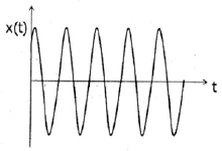
- ξ=0
- 0＜ξ＜1
- ξ=1
- ξ＞1
(정답률: 알수없음)
9. 각 주파수에 대한 공해진동의 신체적 영향으로 가장 거리가 먼 것은?
- 1~3Hz : 호흡이 힘들고, 산소소비 증가
- 4~14Hz : 복통느낌
- 6Hz : 허리, 가슴 및 등쪽에 심한 통증을 느낌
- 30~40Hz : 내장의 심한 공진
(정답률: 알수없음)
10. 10Hz 진동수를 갖는 조화진동의 속도 진폭이 5×10-3였다. 이 때, 수직진동레벨(VL, dB(V))은?
- 76
- 85
- 87
- 91
(정답률: 알수없음)
11. 대표적인 소음 측정 설비인 무향실은 기준 주파수 이상 대역에서 만족해야 할 음장 조건이 있다. 이 필수적인 음장 조건은 무엇인가?
- 근음장
- 자유음장
- 확산음장
- 잔향음장
(정답률: 알수없음)
12. 음원으로부터 10m 지점의 평균음압도는 101dB, 동거리에서 특정지향음압도는 107dB 이다. 이 때 지향 계수는?
- 2.11
- 2.56
- 3.98
- 5.01
(정답률: 알수없음)
13. 공해진동 크기의 표현으로 옳은 것은? (단, VAL : 진동가속도레벨, VL : 진동레벨 Wn : 주파수 대역별 인체감각에 대한 보정치)
- VL = VAL × Wn
- VAL = VL × Wn
- VL = VAL + Wn
- Wn = VAL + VL
(정답률: 알수없음)
14. 가로, 세로, 높이가 각각 5m인 실내의 1차원 모드의 고유진동수는? (단, 실내의 벽체는 모두 강벽이고, 공기의 온도는 20℃ 이다.)
- 17.2Hz
- 21.5Hz
- 34.3Hz
- 42.9Hz
(정답률: 알수없음)
15. 지반을 전파하는 파에 관한 설명으로 옳지 않은 것은?
- 계측에 의한 지표진동은 주로 P파이다.
- P파와 S파는 역2승 법칙으로 거리감쇠한다.
- P파는 소밀파 또는 압력파라고도 한다.
- P파는 S파보다 전파속도가 빠르다.
(정답률: 알수없음)
16. 다음 중 흡음감쇠 효과가 가장 큰 경우는?
- 주파수:1000Hz, 온도: 0℃, 상대습도: 50%
- 주파수:1000Hz, 온도: 10℃, 상대습도: 70%
- 주파수:2000Hz, 온도: 0℃, 상대습도: 50%
- 주파수:2000Hz, 온도: 10℃, 상대습도: 70%
(정답률: 알수없음)
17. 반경 r(m)인 원판의 진동음을 ℓ(m) 떨어진 점에서의 음향파워레벨의 근사식에 대한 표현으로 옳은 것은? (단, S는 진동파의 면적(m2), ℓ >> r 이다.)
- PWL≒SPL+10logS-20log(r/ℓ)+3dB
- PWL≒SPL+10logS+20log(r/ℓ)+3dB
- PWL≒SPL+20logS+20log(r/ℓ)+3dB
- PWL≒SPL+20logS-20log(r/ℓ)+3dB
(정답률: 알수없음)
18. 마스킹 효과의 특성에 관한 설명으로 옳은 것은?
- 협대역폭이 소리가 같은 중심주파수를 갖는 같은 세기의 순음보다 더 작은 마스킹 효과를 갖는다.
- 마스킹소음의 레벨이 커질수록 마스킹되는 주파수의 범위가 줄어든다.
- 마스킹효과는 마스킹소음의 중심주파수보다 고주파 수대역에서 보다 작은 값을 갖게 되는 이중대칭성을 갖고 있다.
- 마스킹소음의 대역폭은 어느 한계(한계대역폭) 이상에서는 그 중심주파수에 있는 순음에 대해 영향을 미치지 못한다.
(정답률: 알수없음)
19. 53phon과 같은 크기를 갖는 음은 몇 sone 인가?
- 0.65
- 0.94
- 1.52
- 2.46
(정답률: 알수없음)
20. 가로 3m, 세로 6m의 장방형 면음원 밖에서의 음압레벨은 100dB 였다. 이 면음원으로부터 10m 떨어진 지점의 음압레벨(db)은?
- 80
- 83
- 90
- 98
(정답률: 알수없음)
2과목: 소음방지기술
21. 다음 중 단일벽의 차음특성(투과손실)을 주파수에 따라 나눈 영역에 해당하지 않는 것은?
- 강성제어역
- 공진효과역
- 질량제어역
- 일치효과역
(정답률: 알수없음)
22. 정상청력을 가진 사람이 1000Hz에서 가청할 수있는 최소음압실효치가 2×10-5N/m2 일 때, 어떤 대상음압 레벨이 126dB 였다면 이 대상음의 음압실효치 (N/m2)는?
- 약 20 N/m2
- 약 40 N/m2
- 약 60 N/m2
- 약 100 N/m2
(정답률: 알수없음)
23. 공명형 소음기에 관한 설명으로 가장 거리가 먼것은?
- 작은 관내 공동 구멍수가 많을수록 공명주파수는 커진다.
- 최대투과손실치는 공명주파수에서 일어난다.
- Helmholtz 공명기는 협대역 고주파 소음방지에 탁월하며 공동내에 흡음재를 충진 시 저주파까지 거의 평탄한 감음특성을 보인다.
- 내관의 작은 구멍과 그 배후 공기층이 공명기를 형성하여 흡음함으로써 감음한다.
(정답률: 알수없음)
24. 다음 방음대책을 음원대책과 전파경로대책으로 구분할 때 주로 전파경로대책에 해당하는 것은?
- 소음기 설치
- 마찰력 감소
- 공명방지
- 방음벽 설치
(정답률: 알수없음)
25. 벽체 외부로부터 확산음이 입사될 때 이 확산음의 음압레벨은 115dB 이다. 실내의 흡음력은 35m2 이고, 벽의 투과손실이 33dB, 벽의 면적이 22m2 일 경우 실내의 음압레벨은?
- 66dB
- 69dB
- 74dB
- 86dB
(정답률: 알수없음)
26. 덕트소음 대책과 관련한 설명 중 가장 거리가 먼것은?
- 송풍기 정압이 증가할수록 소음은 감소하므로 공기 분배 시스템은 저항을 최소로하는 방향으로 설계해야 한다.
- 덕트계에서 소음을 효과적으로 흡수하기 위해 흡음재를 송풍기 흡입구나 플래넘에 설치한다.
- 덕트내의 소음 감소를 위한 흡음, 차음 등의 방법은 500Hz 이상의 고주파 영역에서 감쇠효과가 좋다.
- 덕트 내의 소음 감소를 위해 특별한 장치를 설치하지 않아도 덕트 내의 장애물이나 엘보우, 덕트 출구에서의 음파 반사 등에 의해 실내로 나오는 소음을 상당부분 줄일 수 있다.
(정답률: 알수없음)
27. 다음 발파소음 감소대책 중 가장 거리가 먼 것은?
- 완전전색이 이루어져야 한다.
- 지발당 장약량을 감소시킨다.
- 기폭방법에서 역기폭보다 정기폭을 사용한다.
- 도폭선 사용을 피한다.
(정답률: 알수없음)
28. 아래 그림과 같은 방음벽을 설계하였다. S는 음원이고 수음점은 P이다. 수음측 지면이 완전 반사일 경우의 경로차는?
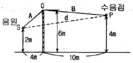
- 3.24m
- 4.57m
- 5.43m
- 7.87m
(정답률: 알수없음)
29. 음향파워레벨이 일정한 기계가 실내에서 운전되고 있다. 실내 음향특성 등의 변화에 따른 실내소음의 변화특성으로 가장 적합한 것은?
- 실정수가 작을수록 실내소음은 작아진다.
- 평균흡음율이 클수록 실내소음은 커진다.
- 기계로부터의 거리의 역2승법칙으로 실내소음이 줄어든다.
- 직접음과 잔향음이 같은 거리는 지향계수의 평방근에 비례한다.
(정답률: 알수없음)
30. 1000Hz의 소음을 원통흡음덕트로 감음하고자 한다. 덕트의 내면에 흡음율이 0.5인 흡음재를 부착했을 때 내경이 30cm이다. 이 덕트에서 20dB의 감음을 얻기 위해서는 몇 m 의 길이가 필요한가? (단, K=α-0.1)
- 3.75m
- 4.15m
- 4.45m
- 4.75m
(정답률: 알수없음)
31. 소음기의 입구 및 팽창부의 직경이 각각 45cm, 1⑤cm 인 경우 팽창형 소음기에 의해 기대할 수 있는 최대투과손실은?
- 약 5dB
- 약 9dB
- 약 16dB
- 약 25dB
(정답률: 알수없음)
32. 공장 내 두 벽과 바닥이 만나는 모서리에 90dB의 소음을 유발하는 공기압축기가 있다. 이 공장의 내부체 적은 200m3, 실내 전표면적은 220m2, 실내 평균흡음율은 0.4 일 때 공장 내에서 직접음과 잔향음이 같은 지점은 공기압축기로부터 얼마나 떨어져 있는가? (단, 공자 내 소음원은 공기압축기 1대로 가정한다.)
- 2.1m
- 4.8m
- 9.0m
- 11.5m
(정답률: 알수없음)
33. 벽의 투과손실이 23dB이고 입사음의 세기가 1일 때 투과음의 세기는?
- 0.0⑤
- 0.01
- 0.2
- 0.4
(정답률: 알수없음)
34. 실내소음을 저감시키기 위해 glass wool을 내벽에 부착하고자 한다. 경제적이고 효율적인 감음효과를 얻기 위한 glass wool의 부착위치로 가장 적합한 것은? (단, 입사음의 파장은 λ라 한다.)
- 벽면에 바로 부착한다.
- 벽면에서 λ만큼 떨어진 위치에 부착한다.
- 벽면에서 λ/2만큼 떨어진 위치에 부착한다.
- 벽면에서 λ/4만큼 떨어진 위치에 부착한다.
(정답률: 알수없음)
35. 큰 공장 내부의 실내소음을 측정하였더니 90dB이었고, 이 소음을 흡음처리하여 83dB 정도로 하려고 한다. 현재의 평균 실내 흡음율이 0.1일 때 평균 흡음율을 얼마 정도로 하여야 하는가? (단, 음원으로부터 충분히 떨어진 지점을 기준으로 한다.)
- 0.2
- 0.26
- 0.36
- 0.95
(정답률: 알수없음)
36. 공동주택의 급배수 소음은 다른 가정에 큰 피해를 주는 경우가 많다. 다음 중 급배수 설비소음 저감대책으로 가장 거리가 먼 것은?
- 급수압이 높을 경우에 공기실이나 수격방지기를 수전 가까운 부위에 설치한다.
- 욕조의 하부와 바닥과의 사이에 완충재를 설치한다.
- 배수방식을 천장배관방식으로 한다.
- 거실, 침실 벽에 배관을 고정하는 것을 피한다.
(정답률: 알수없음)
37. 다음 잔향실에 대한 설명 중 옳지 않은 것은?
- 벽면의 흡음률은 0에 가깝다.
- 확산판을 사용하여 충분히 확산시켜 확산음장이 얻어지도록 만든 공간이다.
- 벽면으로부터의 반사파를 크게 하도록 만든 공간이다.
- 음원으로부터 거리가 멀어짐에 따라 일정하게 감쇠되는 역2승의 법칙이 성립하도록 인공적으로 만든 공간이다.
(정답률: 알수없음)
38. 소음기의 성능을 표시하는 용어 중 소음원에 소음기를 부착하기 전과 후의 공간상의 어떤 특정위치에서 측정한 음압레벨의 차와 그 측정위치로 정의되는 것은?
- noise reduction
- attenuation
- transmission loss
- insertion loss
(정답률: 알수없음)
39. 다음 표는 어떤 자재의 1/3 옥타브 대역으로 측정한 중심주파수별 흡음율이다. 감음계수(NRC)는 얼마인가?
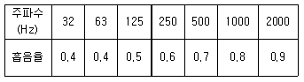
- 0.48
- 0.55
- 0.65
- 0.75
(정답률: 알수없음)
40. 10m(L) × 10m(W) × 4m(H)인 방이 있다. 벽과 천장, 바닥이 모두 흡음율 0.02인 콘크리트로 되어있고 실내 중앙바닥에서 PWL 90dB인 소형기계가 가동될 때, 이 기계로부터 5m 떨어진 실내 한 점에서의 음압레벨은? (단, 기계의 크기는 무시한다.)
- 약 87dB
- 약 90dB
- 약 93dB
- 약 96dB
(정답률: 알수없음)
3과목: 소음진동 공정시험 기준
41. 소음계의 교정장치(calibration network calibrator)는 몇 dB(A)이상이 되는 소음환경에서도 기계 자체의 교정이 가능하여야 하는가? (단, 소음∙진동 공정시험기준)
- 10dB(A) 이상
- 20dB(A) 이상
- 50dB(A) 이상
- 80dB(A) 이상
(정답률: 알수없음)
42. 다음은 동일건물 내 사업장소음 측정자료 분석방법이다. ( )안에 알맞은 것은?
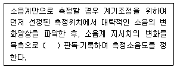
- 5초 간격 10회
- 5초 간격 50회
- 5초 간격 60회
- 5초 간격 100회
(정답률: 알수없음)
43. 다음은 철도소음한도 측정방버 중 측정조건에 관
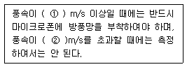
- ① 0.5, ② 2
- ① 1, ② 2
- ① 1, ② 5
- ① 2, ② 5
(정답률: 알수없음)
44. 소음ㆍ진동 공정시험기준에서 정하는 용어의 정의로 옳지 않은 것은?
- 반사음은 한 매질중의 음파가 다른 매질의 경계면에 입사한 후 진행방향을 변경하여 본래의 매질 중으로 되돌아오는 음을 말한다.
- 지발(遲發)발파는 시간차를 두지 않고 발파하는 것을 말한다. 단, 발파기를 1회 사용하는 것에 한한다.
- 소음도는 소음계의 청감보정회로를 통하여 측정한 지시치를 말한다.
- 배경소음도는 측정소음도의 측정위치에서 대상소음이 없을 때 이 소음 ㆍ 진동 공정시험기준에서 정한 측정방법으로 측정한 소음도 및 등가소음도 등을 말한다.
(정답률: 알수없음)
45. 소음계의 구조별 성능기준에 의하면 지침형 지시계기(meter)의 유효지시범위는 얼마이상이어야 하는가?
- 1dB 이상
- 10dB 이상
- 15dB 이상
- 50dB 이상
(정답률: 알수없음)
46. 항공기소음한도 측정자료 분석 시 배경소음보다 10dB 이상 큰 항공기소음의 지속시간 평균치
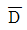
가 63초 일 경우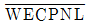
에 보정해야 할 보정량(dB)은?- 4
- 5
- 6
- 7
(정답률: 알수없음)
47. 항공기의 비행횟수가 시간대별 아래표와 같이 통과하였을 경우, 1일간 항공기의 등가통과횟수는?
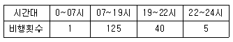
- 295
- 300
- 3⑤
- 310
(정답률: 알수없음)
48. 규제기준 중 동일건물 내 사업장소음 측정방법으로 옳지 않은 것은?
- 손으로 소음계를 잡고 측정할 경우 소음계는 측정자의 몸으로부터 0.3 m 이상 떨어져야 한다.
- 측정은 대상 소음 이외의 소음이나 외부소음에 의한 영향을 배제하기 위하여 옥외 및 복도 등으로 통하는 창문과 문을 닫은 상태에서 측정하여야 한다.
- 사용 소음계는 KS C IEC 61672-1에서 정한 클래스 2 소음계 또는 동등 이상의 성능을 가진 것이어야한다.
- 소음계의 동특성은 원칙적으로 빠름(fast)을 사용하여 측정하여야 한다.
(정답률: 알수없음)
49. 다음 중 도로교통진동 측정자료 평가표 서식에 기재하여야 할 사항으로 가장 거리가 먼 것은?
- 관리자
- 보정치 합계
- 측정지점 약도
- 측정자
(정답률: 알수없음)
50. 항공기소음한도 측정을 위해 소음도 기록기를 사용하여 측정자료 분석 시 1일 단위의 WECPNL을 구하는 식으로 옳은 것은? (단,
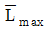
는 당일의 평균 최고소음도, N은 1일간 항공기의 등가통과횟수 이다.)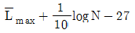
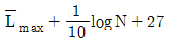
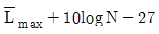
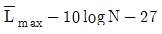
(정답률: 알수없음)
51. 배출허용기준 중 소음측정방법으로 옳지 않은 것은?
- 공장의 부지경계선에 비하여 피해가 예상되는 자부지경계선에서의 소음도가 더 큰 경우에는 피해가 예상되는 자의 부지경계선을 측정점으로 한다.
- 측정지점에 높이가 1.5 m 를 초과하는 장애물이 있는 경우에는 장애물로부터 소음원 방향으로 1.0 ~ 3.5m 떨어진 지점으로 한다.
- 측정소음도의 측정은 대상 배출시설의 소음발생기기를 가능한 한 최대출력으로 가동시킨 정상상태에서 측정하여야 한다.
- 피해가 예상되는 적절한 측정시각에 측정지점수 1지점을 선정∙측정하여 측정소음도로 한다.
(정답률: 알수없음)
52. 소음∙진동 공정시험기준상 소음계의 구조별 성능기준으로 가장 거리가 먼 것은?
- 마이크로폰은 지향성이 작은 압력형으로 한다.
- 증폭기는 마이크로폰에 의하여 음향에너지를 전기 에너지로 변환시킨 양을 증폭시키는 장치를 말한다.
- 동특성조절기는 지시계기의 반응속도를 빠름 및 느림의 특성으로 조절할 수 있는 조절기를 가져야 한다.
- 출력단자는 소음신호를 기록기 등에 전송할 수 있는 직류 단자를 갖춘 것이어야 한다.
(정답률: 알수없음)
53. 규제기준 중 발파진동 측정 시 디지털 진동자동분석계를 사용할 때의 샘플주기는 얼마로 놓는가? (단, 측정진동레벨 분석)
- 10초 이하
- 5초 이하
- 1초 이하
- 0.1초 이하
(정답률: 알수없음)
54. 다음은 철도진동한도 측정방법 중 분석절차에 관한 기준이다. ( )안에 알맞은 것은?
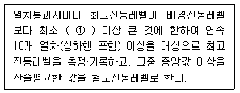
- 1dB
- 5dB
- 10dB
- 15dB
(정답률: 알수없음)
55. 진동픽업에 관한 설명으로 가장 거리가 먼 것은?
- 가동 코일형의 동전형 진동픽업은 전자형이다.
- 동전형 진동픽업은 지르콘규산납(ZrPbSiO3)의 소결체가 주로 사용된다.
- 압전형 진동픽업은 바람의 영향을 받으므로 바람을 막을 수 있는 차폐물의 설치가 필요하다.
- 동전형 진동픽업을 대형전기기기 등에 설치할 때는 전자장의 영향을 받기 쉬우므로 특히 주의가 필요하다.
(정답률: 알수없음)
56. 다음은 규제기준 중 발파소음의 측정을 위한 측정 시간 및 측정지점수 기준이다. ( )안에 가장 적합한 것은?
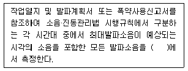
- 1지점 이상
- 2지점 이상
- 3지점 이상
- 5지점 이상
(정답률: 알수없음)
57. 다음은 규제기준 중 동일건물 내 사업장소음 측정을 위한 측정시간 및 측정지점수 기준이다. ( )안에 가장 적합한 것은?
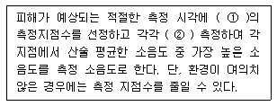
- ① 2지점 이상, ② 2회 이상
- ① 2지점 이상, ② 4회 이상
- ① 4지점 이상. ② 2회 이상
- ① 4지점 이상. ② 4회 이상
(정답률: 알수없음)
58. 규제기준 중 발파소음 측정평가 시 대상소음도에 시간대별 보정발파횟수에 따른 보정량을 보정하여 평가소음도를 구하는데, 지발발파의 경우는 보정발파횟수를 몇 회로 간주하는가?
- 1회
- 3회
- 5회
- 10회
(정답률: 알수없음)
59. 다음 중 청감보정회로 및 동특성을 “A특성 - 느림(Slow)" 조건으로 하여 측정해야 하는 소음은?
- 생활소음
- 발파소음
- 도로교통소음
- 항공기소음
(정답률: 알수없음)
60. 디지털 진동자동분석계를 사용하여 도로교통진동 한도 측정 시 측정진동레벨로 정하는 기준은?
- 샘플주기를 1초 이내에서 결정하고 5분이상 측정하여 자동 연산∙기록한 80% 범위의 상단치인 L10값을 그 지점의 측정진동레벨로 한다.
- 샘플주기를 1초 이내에서 결정하고 1분이상 측정하여 자동 연산∙기록한 80% 범위의 상단치인 L10값을 그 지점의 측정진동레벨로 한다.
- 샘플주기를 0.1초 이내에서 결정하고 5분이상 측정하여 자동 연산∙기록한 80% 범위의 상단치인 L10값을 그 지점의 측정진동레벨로 한다.
- 샘플주기를 0.1초 이내에서 결정하고 1분이상 측정하여 자동 연산∙기록한 80% 범위의 상단치인 L10값을 그 지점의 측정진동레벨로 한다.
(정답률: 알수없음)
4과목: 진동방지기술
61. 진동수가 같은 2개의 조화운동 x1=3cosωt, x2=6sinωt를 합성하면 진폭은 얼마인가? (단, 진폭의 단위는 mm로 한다. ω는 각진동수이고, t는 시간변수이다.)
- 6.7mm
- 8.3mm
- 10mm
- 12mm
(정답률: 알수없음)
62. 진동발생이 크지 않은 공장기계의 대표적인 지반 진동차단 구조물은 개방식 방진구이다. 이러한 방진구의 설계시 다음 중 가장 중요한 인자는?
- 트렌치 폭
- 트렌치 깊이
- 트렌치 형상
- 트렌치 위치
(정답률: 알수없음)
63. 질량 m인 기계가 속도 v로 운전될 때, 가진점에 스프링을 설치하여 진동을 모두 흡수시켰다. 최대 충격력 F, 최대 변위 δ일 때, 다음 중 올바른 평형 에너지 방정식은? (단, 스프링 정수는 k, 가속도는 a이다.)
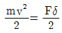
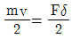
- mv2=Fk
- ma=Fδk
(정답률: 알수없음)
64. 기계에너지를 열에너지로 변환시키는 감쇠기구의 종류와 거리가 먼 것은?
- 점성감쇠(viscous damping)
- 상대감쇠(relative damping)
- 마찰감쇠(coulomb damping)
- 일산감쇠(radiation damping)
(정답률: 알수없음)
65. 다음 중 구조가 복잡하여도 성능은 아주 좋은 편으로 부하능력이 광범위하며, 고주파진동에 대한 절연성이 좋은 방진재료는?
- 금속스프링
- 공기스프링
- 스폰지류
- 펠트류
(정답률: 알수없음)
66. 감쇠비 0인 강제진동에서 진동차진율이 최소인 경우는? (f:강제진동수 fn:고유진동수)
- f/fn = 1
- f/fn ＜ √2
- f/fn = √2
- f/fn ＞ √2
(정답률: 알수없음)
67. 질량 m, 길이 ℓ인 그림과 같은 막대 진자의 고유 진동수는? (단, 수직으로 매달린 가늘고 긴 막대가 평면에서 진동하며 진폭은 작다고 가정한다.)
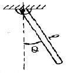
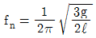
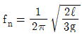
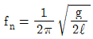
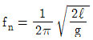
(정답률: 알수없음)
68. 가진력 저감을 위한 방진대책으로 가장 거리가 먼 것은?
- 단조기는 단압프레스로 교체한다.
- 기계에서 발생하는 가진력은 지향성이 있으므로 기계의 설치 방향을 바꾼다.
- 크랭크 기구를 가진 왕복운동기계는 1개의 실린더를 가진 것으로 교체한다.
- 왕복운동압축기는 터보형고속회전압축기로 교체한다.
(정답률: 알수없음)
69. 기계에서 발생하는 불평형력은 회전 및 왕복운동에 의한 관성력 및 모멘트에 의해 발생한다. 다음 중 회전운동에 의해서 발생하는 관성력을 원심력(F)으로 옳게 나타낸 식은? (단, m:질량, v:회전속도, r:회전반경, w:각진동수)
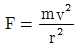
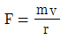
- F=mrω
- F=mω2r
(정답률: 알수없음)
70. 중량 W=15.5N, 감쇠계수 Ce =0.⑤5N∙s/cm, 스프링정수 k=0.468N/cm인 진동계의 감쇠비는?
- 0.21
- 0.24
- 0.32
- 0.39
(정답률: 알수없음)
71. 그림과 같은 진동계에서의 방진대책의 설계범위로 가장 적합한 것은? (단, f는 강제진동수, fn은 고유진동수이며, 이 때 진동전달율은 12.5% 이하가 된다.)
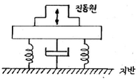
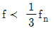
- 1.4fn＜f＜3fn
- fn＜f＜1.4fn
- 3fn＜f
(정답률: 알수없음)
72. 무게가 850N인 기계가 600rpm으로 운전되고 있으며, 동일한 스프링 4개를 이용하여 20dB를 차진하고자 한다. 이 때 스프링 1개당 스프링상수는? (단, 스프링은 병렬연결, 감쇠는 무시)
- 55N/cm
- 78N/cm
- 111N/cm
- 125N/cm
(정답률: 알수없음)
73. 쇠로된 금속관 사이의 접속부에 고무를 넣어 진동을 절연하고자 한다. 파동에너지 반사율이 95%가 되면, 전달되는 진동의 감쇠량(dB)은?
- 10
- 13
- 16
- 20
(정답률: 알수없음)
74. 그림과 같이 질량이 작은 기계장치에 금속 스프링으로 방진 지지를 할 경우에 금속 스프링의 질량을 무시할 수 없는 경우가 있다. 기계장치의 질량을 M, 금속스프링의 질량을 m, 금속스프링의 강성을 k라고 할때, 금속 스프링의 질량을 고려한 시스템의 고유진동수는(fn)는?
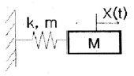
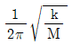
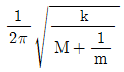
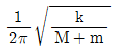
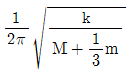
(정답률: 알수없음)
75. 진동원에서 10m 떨어진 지점의 진동레벨이 98dB이다. 진동원에서 1m 떨어진 지점의 진동레벨은? (단, 이 진동파는 표면파(n=0.5), 지반전파 감쇠정수λ=0.08)
- 114 dB
- 108 dB
- 102 dB
- 96 dB
(정답률: 알수없음)
76. 지반진동 차단 구조물에 관한 설명으로 옳지 않은 것은?
- 지반의 흙, 암반과는 응력파 저항 특성이 다른 재료를 이용한 매질층을 형성하여 지반진동파 에너지를 저감시키는 구조물이다.
- 개방식 방진구 보다는 충전식 방진구가 에너지 차단 특성이 좋다.
- 강널말뚝을 이용하는 공법은 저주파수 진동 차단에 는 효과가 적다.
- 방진구의 가장 중요한 설계인자는 방진구의 깊이로서 표면파의 파장을 고려하여 결정하여야 한다.
(정답률: 알수없음)
77. 2000rpm으로 회전하는 기계에서 계기로 전달되는 진동을 방지하기 위해 차단기를 설치하였다. 차단기가 50kg의 무게에 0.25cm의 처짐이 있다면, 계기판에 전달되는 진동전달율은? (단, 감쇠는 무시)
- 0.03
- 0.06
- 0.1
- 0.13
(정답률: 알수없음)
78. 무게가 150N인 기계를 방진고무 위에 올려 놓았더니 1.0cm가 수축되었다. 방진고무의 동적배율이 1.2이라면 방진고무의 동적 스프링 정수는?
- 94 N/cm
- 120 N/cm
- 180 N/cm
- 240 N/cm
(정답률: 알수없음)
79. 진동방지계획 수립시 다음 보기 중 일반적으로 가장 먼저 이루어지는 것은?
- 측정치와 규제 기준치의 차로부터 저감 목표레벨 설정
- 수진점 일대의 진동 실태조사
- 수진점의 진동 규제기준 확인
- 발생원의 위치와 발생기계를 확인
(정답률: 알수없음)
80. 금속스프링의 장단점으로 가장 거리가 먼 것은?
- 온도, 부식, 용해 등 환경요소에 대한 저항성이 크다.
- 저주파 차진에 효과적이다.
- 감쇠가 거의 없으며, 공진시 전달율이 매우 크다.
- 1개의 스프링으로 3축방향의 스프링정수를 광범위하게 선택할 수 있다.
(정답률: 알수없음)
5과목: 소음진동 관계 법규
81. 소음진동관리법규상 운행차의 소음이 운행차 소음 허용기준을 초과하여 운행차의 개선명령을 받은 자가 개선 결과를 특별시장 등에게 제출하여야 하는 기간기준은?
- 개선명령일부터 10일 이내에
- 개선명령일부터 30일 이내에
- 개선명령을 통보받은 날부터 7일 이내에
- 개선명령을 통보받은 날부터 14일 이내에
(정답률: 알수없음)
82. 소음진동관리법상 거짓이나 부정한 방법으로 배출 시설 설치신고를 하고 배출시설을 설치한 자에 대한 벌칙기준은?
- 3년 이하의 징역 또는 1천500만원 이하의 벌금
- 1년 이하의 징역 또는 1천만원 이하의 벌금
- 6개월 이하의 징역 또는 500만원 이하의 벌금
- 300만원 이하의 과태료
(정답률: 알수없음)
83. 소음진동관리법상 용어의 뜻으로 옳지 않은 것은?
- 소음이란 기계∙기구∙시설, 그 밖의 물체의 사용 또는 환경부령으로 정하는 사람의 활동으로 인하여 발생하는 강한 소리를 말한다.
- 진동이란 기계∙기구∙시설, 그 밖의 물체의 사용으로 인하여 발생하는 강한 흔들림을 말한다.
- 교통기관이란 기차∙자동차∙전차∙도로 및 철도 등을 말한다. 다만, 선박과 항공기는 제외한다.
- 방음시설이란 소음배출시설인 물체로부터 발생하는 소음을 없애거나 줄이는 시설로서 환경부장관이 고시하는 것을 말한다.
(정답률: 알수없음)
84. 소음진동관리법규상 이동소음원의 규제에 따른 이동 소음원의 종류와 거리가 먼 것은? (단, 그 밖의 사항 등은 제외)
- 저공으로 비행하는 항공기
- 이동하며 영업을 하기 위하여 사용하는 확성기
- 행락객이 사용하는 음향기계
- 소음방지장치가 비정상이거나 음향장치를 부착하여 운행하는 이륜자동차
(정답률: 알수없음)
85. 소음진동관리법규상 도시지역 중 상업지역의 낮(06:00~22:00)시간대 공장진동 배출허용기준은?
- 60dB(V) 이하
- 65dB(V) 이하
- 70dB(V) 이하
- 75dB(V) 이하
(정답률: 알수없음)
86. 소음진동관리법규상 자동차의 종류에 관한 사항으로 옳지 않은 것은? (단, 2006년 1월 1일부터 제작되는 자동차 기준)
- 화물자동차에 해당되는 건설기계의 종류는 환경부장관이 정하여 고시한다.
- 이륜자동차에는 옆 차붙이 이륜자동차 및 이륜차에서 파생된 3륜 이상의 최고속도 50km/h를 초과하는 이륜자동차를 포함한다.
- 승용자동차에는 지프(JEEP) 및 승합차를 포함하고, 화물자동차에는 왜건(WAGON) 및 밴(VAN)을 포함한다.
- 전기를 주동력으로 사용하는 자동차에 대한 종류의 구분은 차량총중량에 의한다.
(정답률: 알수없음)
87. 환경정책기본법상 용어의 정의 중 “일정한 지역안에서 환경의 질을 유지하고 환경오염 또는 환경훼손에 대하여 환경이 스스로 수용ㆍ정화 및 복원할 수 있는 한계”를 뜻하는 것은?
- 환경순화
- 환경기준
- 환경용량
- 환경영향한계
(정답률: 알수없음)
88. 소음진동관리법령상 과태료 부과기준으로 옳지 않은 것은?
- 소음기 또는 소음덮개를 떼어버리거나 경음기를 추가로 부착한 경우 1차 위반시 과태료 금액은 60만원이다.
- 이동소음원의 사용금지 또는 제한조치를 위반한 경우 3차 위반시 과태료 금액은 10만원이다.
- 위반행위의 횟수에 따른 부과기준은 최근 1년간 같은 위반행위로 부과처분을 받은 경우에 적용한다.
- 부과권자는 위반행위의 동기와 그 결과 등을 고려하여 과태료 금액의 100% 범위에서 감경할 수 있다.
(정답률: 알수없음)
89. 소음진동관리법규상 진동배출시설기준이 아닌 것은? (단, 동력을 사용하는 시설 및 기계∙기구에 한한다.)
- 4대 이상 시멘트벽돌 및 블록의 제조기계
- 20마력 이상의 단조기
- 50마력 이상의 연탄제조용 윤전기
- 20마력 이상의 프레스(유압식은 제외한다)
(정답률: 알수없음)
90. 다음은 소음진동관리법규상 폭약 사용 규제 요청에 관한 기준이다. ( )안에 알맞은 것은?
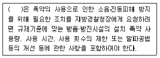
- 유역환경청장
- 국토해양부장관
- 환경부장관
- 특별자치도지사 또는 시장∙군수∙구청장
(정답률: 알수없음)
91. 다음은 소음진동관리법상 위법시설에 대한 조치사항이다. ( )안에 알맞은 것은?
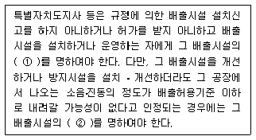
- ① 조업정지, ② 사용중지
- ① 사용중지, ② 폐쇄
- ① 사용중지, ② 허가취소
- ① 조업정지, ② 허가취소
(정답률: 알수없음)
92. 소음진동관리법규상 도시지역 중 전용주거지역의 밤(24:00~06:00)시간대 공장소음 배출허용기준은?
- 40dB(A) 이하
- 45dB(A) 이하
- 50dB(A) 이하
- 55dB(A) 이하
(정답률: 알수없음)
93. 소음진동관리법규상 자동차제작자가 받은 인증(제작차 소음허용기준에 적합)내용 중 환경부령으로 정하는 중요사항을 변경하기 위하여 변경인증신청서에 첨부해야 하는 서류목록으로 가장 거리가 먼 것은?
- 자동차 제원명세서
- 자동차 무부하 배출가스검사 증명서
- 동일 차종임을 입증할 수 있는 서류
- 변경된 인증내용에 대한 설명서
(정답률: 알수없음)
94. 소음진동관리법규상 소음도 검사기관의 장이 소음도검사 신청서류 등을 작성하여 보존해야 하는 기간기준은?
- 1년간 보존
- 2년간 보존
- 3년간 보존
- 5년간 보존
(정답률: 알수없음)
95. 소음진동관리법규상 소음배출시설기준으로 10마력이상으로 정해진 시설이 아닌 것은? (단, 마력기준시설 및 기계∙기구)
- 제분기
- 탈사기
- 금속절단기
- 송풍기
(정답률: 알수없음)
96. 소음진동관리법령상 인증을 면제할 수 있는 자동차에 해당하는 것은?
- 국가대표 훈련용으로 사용하기 위하여 반입하는 자동차로서 문화체육관광부장관의 확인을 받은 자동차
- 주한 외국군인이 사용하기 위하여 반입하는 자동차
- 외국에서 1년 이상 거주한 내국인이 주거를 이전하기 위하여 이주물품으로 반입하는 1대의 자동차
- 방송용 등 특수한 용도로 사용되는 자동차로서 환경부 장관이 정하여 고시하는 자동차
(정답률: 알수없음)
97. 소음진동관리법규상 운행자동차 중 “중대형 승용자동차”의 ① 배기소음 및 ② 경적소음 허용기준은? (단, 2006년 1월 1일 이후에 제작되는 자동차 기준)
- ① 100dB(A) 이하, ② 110dB(C) 이하
- ① 100dB(A) 이하, ② 112dB(C) 이하
- ① 1⑤dB(A) 이하, ② 110dB(C) 이하
- ① 1⑤dB(A) 이하, ② 112dB(C) 이하
(정답률: 알수없음)
98. 환경정책기본법령상 관리지역 중 보전관리지역의 밤시간대의 소음환경기준은? (단, 일반지역)
- 40Leq dB(A)
- 45Leq dB(A)
- 50Leq dB(A)
- 55Leq dB(A)
(정답률: 알수없음)
99. 다음은 소음진동관리법규상 생활소음의 규제기준이다. ( )안에 알맞은 것은?
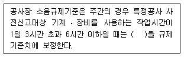
- +1dB
- +3dB
- +5dB
- +10dB
(정답률: 알수없음)
100. 소음진동관리법규상 소음도 검사기관과 관련한 행정처분 기준 중 “고의 또는 중대한 과실로 소음도검사를 부실하게 한 경우” 1차-2차-3차 행정처분기준으로 옳은 것은?
- 영업정지1개월 - 영업정지3개월 - 지정취소
- 업무정지6일 - 경고 - 등록취소
- 경고 - 경고 - 지정취소
- 개선명령 - 경고 - 지정취소
(정답률: 알수없음)